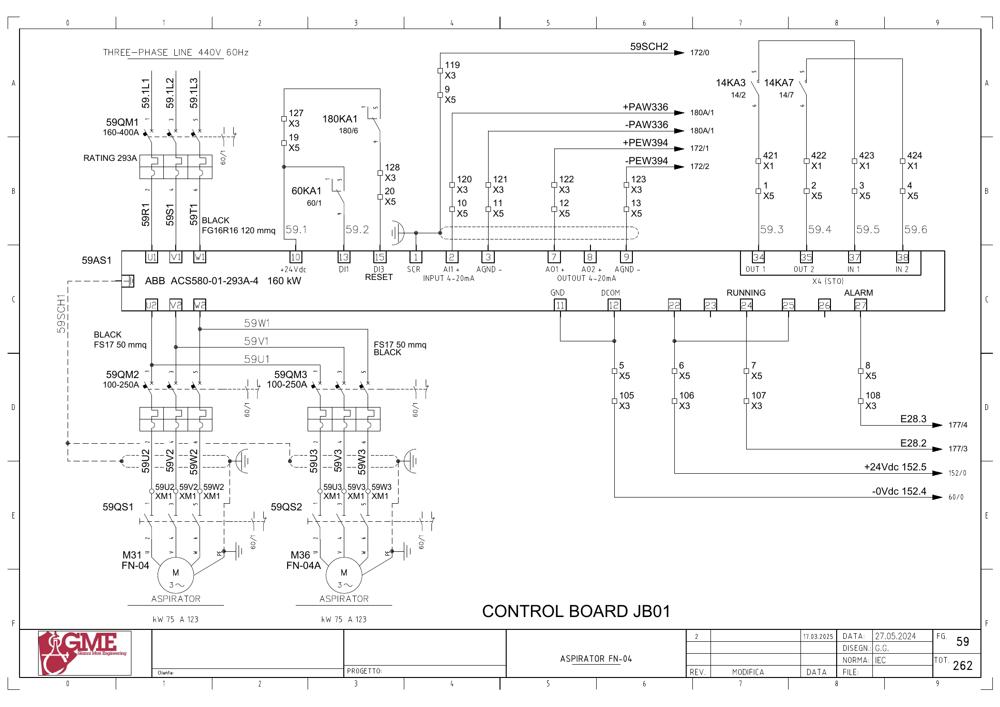
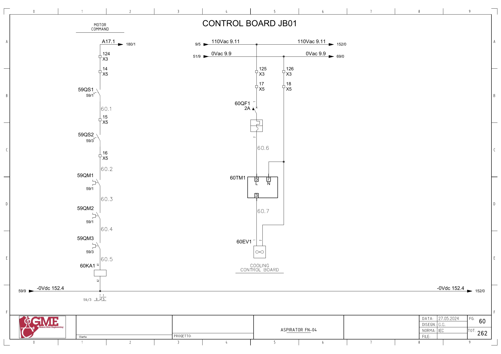

FN04 · 집진 흡입 팬 전기 회로 추적
1. 도면의 구성과 진단 경계
FG59: 59AS1 ABB ACS580-01-293A-4(160kW) 출력에서 M31 FN-04와 M36 FN-04A 두 모터(도면 각75kW·123A)로 분기합니다. 두 모터의 실물·설비 카드 관계는 미확인입니다.
FN04 PLC 태그 하나를 단일 모터로 해석하면 안 됩니다. 공동 인버터와 두 분기 차단기·개폐기·모터를 나눠 진단합니다.
추가 시공도면 · 접속함·케이블·배관 경로 — 승인·현재 설치는 확인 전입니다.
2. 기동 명령
A17.1 ↔ 백업 %Q17.1 / start fn04 · FG60 · PDF 61
- A17.1 (FG180/1 참조)
- X3:124 → X5:14
- 59QS1 보조접점 → X5:15
- 59QS2 보조접점 → X5:16
- 59QM1 보조접점
- 59QM2 보조접점
- 59QM3 보조접점
- 60KA1 코일 A1→A2 / 0V152.4
전달·사용 위치: FG59: 인버터 단자10(+24V) → 60KA1 접점1→9 → 단자13(DI1).
원본 심볼 직접 참조: 1809 / allarms 1 / ORef 1068 · 1900 / filter / ORef 1852 · 1965 / motors 1 / ORef 1023
3. 운전 응답
E28.2 ↔ 백업 %I28.2 / fn04_fbk · FG59 · PDF 60
- +24Vdc152.5 → 59AS1 단자22(RUNNING 공통)
- 59AS1 단자24 → X5:7 → X3:107
- E28.2 → FG177/3 PLC 입력 참조
전달·사용 위치: 원본1070 hmi inputs: FN04_Fbk → Inputs.FN04 Run(코일 Part118). 사용 위치1809·1964 등. 원본1085 simulation도 같은 내부 응답을 씁니다.
원본 심볼 직접 참조: 1039 / time work motor / ORef 2260 · 1070 / hmi inputs / ORef 38
4. 인버터 이상
E28.3 ↔ 백업 %I28.3 / fn04_all_inv · FG59 · PDF 60
- +24Vdc152.5 → 59AS1 단자25(ALARM 공통)
- 59AS1 단자27 → X5:8 → X3:108
- E28.3 → FG177/4 PLC 입력 참조
전달·사용 위치: 원본1070: FN04_All_inv → Inputs.FN04_All_inv(코일 Part120). 원본1809에서 래치,1965에서 요청 해제.
원본 심볼 직접 참조: 1070 / hmi inputs / ORef 80
5. 속도 설정
±PAW336 ↔ 백업 %QW336 / fn04_sp · FG59 · PDF 60
- +PAW336 → X3:120 → X5:10 → 59AS1 단자2(AI1+)
- -PAW336 → X3:121 → X5:11 → 단자3(AGND)
- FG180A/1 아날로그 출력 참조
전달·사용 위치: 도면 AI1은 4–20mA 표기. 원본1689는 Data.SET_PERC_FN04와 FN04_SP를 연결합니다. 변환 명령은 지원 부분 실행 범위 밖입니다.
원본 심볼 직접 참조: 1689 / analog output conversion / ORef 859
6. 전류 전달
±PEW394 ↔ 백업 %IW394 / fn04_current · FG59 · PDF 60
- 59AS1 단자8(AO2) → X5:12 → X3:122 → +PEW394
- 단자9(AGND) → X5:13 → X3:123 → -PEW394
- FG172/1·2 아날로그 입력 참조
전달·사용 위치: 원본1071: FN04_Current → Inputs.FN04_Absorption(Part123). 변환 제목 fn-02 aspirator와 실제 FN04 신호의 불일치는 계속 확인합니다.
원본 심볼 직접 참조: 1071 / hmi inputs / ORef 130 · 1770 / analog input conversion / ORef 1484
위 직접 참조는 복원 원본의 같은 심볼명 위치입니다. 읽기·쓰기 역할, 현재 호출, 현장 사용을 함께 확정한 표는 아닙니다. 원본의 simulation 블록 참조가 있더라도 이번 작업에서 가상 실행·개발·시험은 진행하지 않았습니다.
원본 PLC와 연결
남은 확인과 기록
- Q17.1→60KA1 명령 회로와 FG180 출력 모듈·현재 배선 대조
- 백업 Q4.2 spare_0와 과거 설명의 관계: 기존 FN04 자료 불일치 유지
- M31 FN-04와 M36 FN-04A 실물·설비 카드·정비 이력을 별도 식별
- 두 분기 중 한쪽 차단 시 기동 허가·운전 응답·보호 정책 확인
- 59AS1 AI1/AO2·RUNNING/ALARM의 현재 파라미터·스케일 확인
- hmi inputs와 원본 simulation 블록의 현재 호출 조건·동일 응답 복수 쓰기 확인
- 1689에서 SET_PERC_FN04를 5~100으로 제한하는 쓰기와 1965의 설정0 정지 조건: 전체 호출·다른 쓰기 순서 확인
제조사 단자 정의 대조
ABB ACS580-01 하드웨어 매뉴얼 Rev.D의 인쇄141·142페이지(PDF145·146)는22=RO2C,25=RO3C로 정의합니다. 이 자료는 단자 정의 대조에 사용하며 기본 매크로의 신호 기능·전압 모드를 현재 현장 설정으로 간주하지 않습니다.
정정 기록: 초기 작업지의 공통 단자23·26 표기를 확대 도면과 ABB 정의에 따라22·25로 바로잡았습니다. 원본 도면은 변경하지 않았습니다.
도면을 함께 확인
FG 59 · 해당 도면 보기

FG 60 · 해당 도면 보기

| 기록 항목 | 내용 |
|---|---|
| 현장 식별 | 설비 ID / 반·단자대 / 모터·인버터 명판 / 도면 개정 |
| 신호 구간 | PLC 명령 / 단자 / 직렬 접점 / 릴레이 / DI / 응답 접점 / 입력 / 내부 DB |
| 관찰 결과 | 시각 / 운전 모드 / 기준값의 근거 / 관찰값 / 최초 불일치 구간 |
| 복구 확인 | 원인·조치 / 원인 해제 / Reset / 재요청 / 주변 설비 영향 |